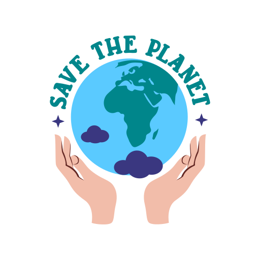

Connais-tu ton empreinte écologique de la semaine?
En tant que citoyens, nos habitudes quotidiennes ont un impact sur l’environnement. Ce site te permet d’évaluer ton empreinte carbone personnelle à travers un court questionnaire, et de découvrir comment réduire ton impact grâce à des conseils pratiques.
Tout nos calculs et manipulation des données sont inspirés du site web impactco2

Mesure ton impact, agis pour demain.A propos de nous
Ce site internet a été créé par 4 étudiants dans le cadre d'un projet en seconde année de licence MIASHS (Maths Info Appliquées aux Sciences Humaines et Sociales) qui consiste à créer un site internet pour sensibiliser à l'écologie grâce au calcul de notre empreinte carbone.
Ce projet a été réalisé par :
- Rubens Hasler
- Hyacinthe Waboe
- Olti Mjeku
- Ismael Cabrera Belmar